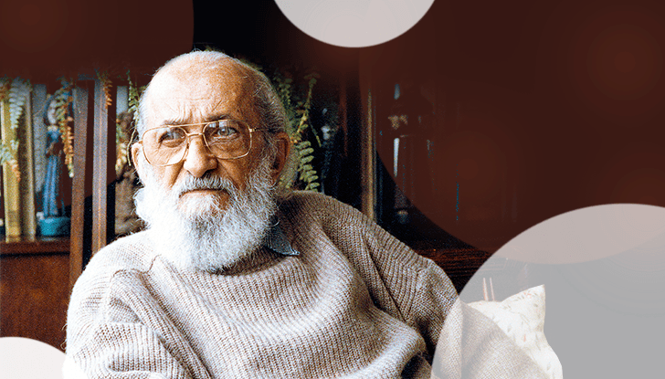
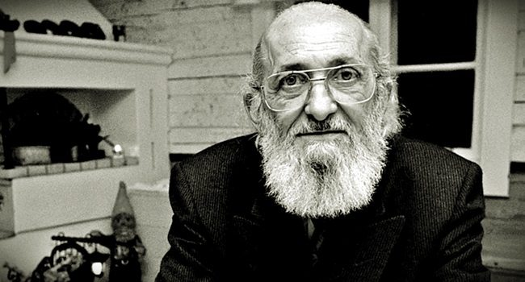

Paulo Freire (1921-1997) foi um influente educador brasileiro, conhecido por sua abordagem inovadora na alfabetização de adultos, combinando aprendizado rápido com engajamento cívico através de debates.
Embora tenha sido amplamente aclamado internacional
Freire enfrentou controvérsias em seu próprio país, principalmente devido à associação de seu trabalho com ideologias comunistas do século XX.
Após uma temporada fora do Brasil, retornou em 1979, beneficiado pela anistia do governo Geisel. Estabelecendo-se em São Paulo, ingressou na política, tornando-se secretário de Educação durante o mandato de Luiza Erundina, além de lecionar na UNICAMP e na PUC.
Nascido em Recife, Pernambuco, em 19 de setembro de 1921, Freire cresceu em Jaboatão dos Guararapes após o falecimento de seu pai quando tinha apenas 13 anos. Sua mãe assumiu a difícil tarefa de sustentar a família.

Após receber assistência para continuar seus estudos, Freire ingressou na Faculdade de Direito do Recife em 1943. Paralelamente, ensinava língua portuguesa e filosofia da educação.
Em 1947, foi nomeado diretor do Departamento de Educação e Cultura do Serviço
Social de Pernambuco. Fundou o Instituto Capibaribe em 1955, uma instituição pioneira que continua em atividade.
Por sua contribuição educacional, Freire recebeu inúmeros títulos de Doutor Honoris Causa de várias universidades ao redor do mundo, incluindo Harvard, Cambridge e Oxford. Em 1986, foi agraciado com o Prêmio da UNESCO de "Educação para a Paz".
Freire foi casado duas vezes, primeiro com Elza Maria Costa de Oliveira, com quem teve cinco filhos, e depois com Ana Maria Araújo Freire, conhecida como Nita Freire.
Ele faleceu em São Paulo em 2 de maio de 1997, devido a complicações de insuficiência cardíaca. Sua obra continua a influenciar a educação e a luta por justiça social em todo o mundo.